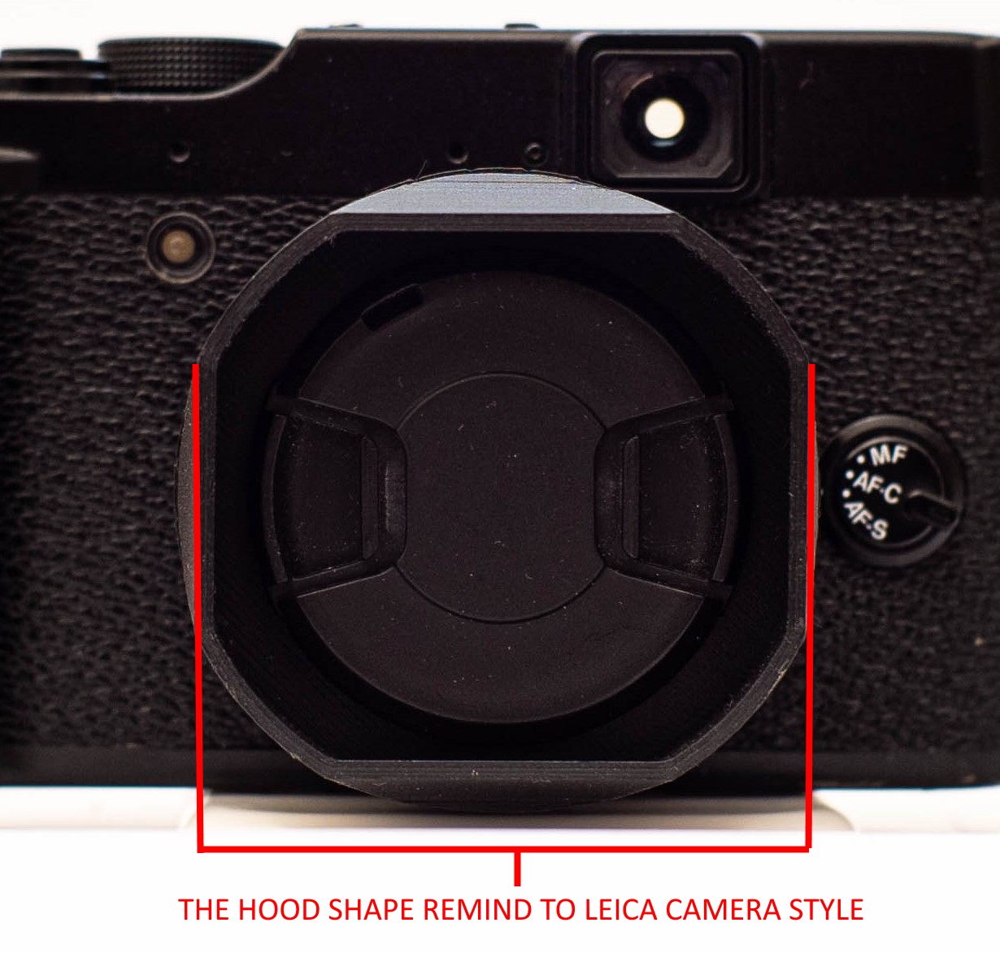
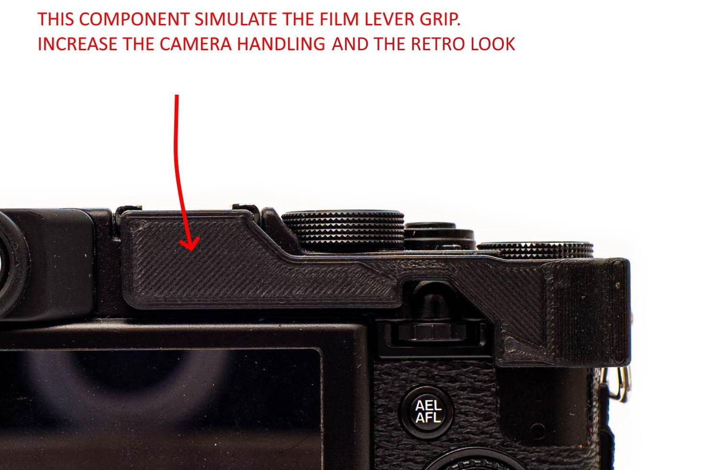

These mods has been studied to increase the camera grip and the retro look.
The original lens hood was pretty ugly and useless, so i decided to design a new one that reminds to the leica camera like the M line. This tipe of design can be found in the old analog Leica camera such as the M6 , the MP and the M-A.

The new hood design create an issue due to his diameter ; the zoom ring , in fact, is unreachable by the increasing of the hood diameter. So i have to make an externsion ring to be able too reach the zoom. These solution is necessary for the camera usage, but from a design prospective , give a cleaner look to the camera.
The "fake" film lever increase the thumb grip to give the one hand stability and the hand confort. It's design to be printed in 2 pieces to stick together for not compromising the strenght by the printing orientation.
